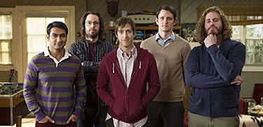

Silicon Valley, une comédie dans l’informatique
Cette série comique va nous faire vivre l’aventure du jeune programmeur Richard Hendricks et de ses amis . Une aventure à mourir de rire, nous plongeant dans ce paradis de l’innovation . Avec des personnages tous plus intéressant les uns que les autres . Tout en dressant une critique de la Valley, et de ses géants .
Silicon Valley la série comique sur le numérique
Silicon Valley est une série de 6 saisons créé en 2014 par Mike Judge et diffusé sur HBO. Elle nous montre les aventures de Richard Hendricks, un jeune programmeur, ayant créé un algorithme de compression révolutionnaire au point d'être convoité par les plus gros de la Silicon Valley . Richard va donc s'entourer de ses amis et de collaborateurs afin de mener son projet à bien : percer dans « ce paradis de l'électronique et de l'informatique ». Il va avec l'aide de ses amis Erlich Bachman, Dinesh Chugtai, Bertram Gilfoyle et Donald « Jared » Dunn crée son entreprise qui portera le nom de Pied Piper et deviendra au fil des saisons une des plus grosses entreprises de la Valley.
De gauche à droite : Dinesh Chugtai / Bertram Gilfoyle / Richard Hendricks / Donald « Jared » Dunn et Erlich Bachman
Des personnages hauts en couleurs
Les personnalités atypiques « geek » vont s'enchaîner passant des programmateurs aux PDG dérangés, créant un mélange de personnages comique. On va donc durant tout le long des épisodes découvrir différents personnages haut en couleur tel que Gavin Belson, ou encore Russ Hanneman etc. Certains caméo sont présents dans la série comme Haley Joel Osment (6éme sens …) mais, également dans le final de la série Bill Gates en personne fait son apparition.

Haley Joel Osment sur un plateau télévisé pour la promotion de Silicon Valley
Une critique de cette sphère de l'innovation
La série donne une vision très déjantée de la Silicon Valley, on voit à la fois les manipulations, la concurrence entre les entreprises, mais également le côté parfois fou et loufoque de ces '' génies '' du numérique. De plus même si les entreprises que l'on connaît sont énormément citées, les entreprises inventées (tel qu'Hooli) pour la série nous dressent un portrait satirique de ces géants du Web. Nous montrant que ces dirigeants et plus particulièrement cet endroit est totalement coupé de la réalité. Parfois, on se demandera même s'il est possible que des personnalités si atypiques puissent réellement exister. Mais tout n'est pas rose dans la Valley …

Gavin Belson, le PDG d’Hooli
Les problèmes que posent nos protagonistes.
Cependant, il faut prendre conscience que, Richard et ses amis, et de manière plus générale la Silicon Valley par leurs simples activités sont d'énormes pollueurs. En effet la création de logiciel, de site… crée un énorme pollution numérique, 25 % des GES dû au numérique sont dues aux data centers stockant les données et 28% dues aux infrastructures réseaux. Deux éléments essentiels à la Valley dans la création d'une entreprise numérique. On va donc aborder dans les articles suivants quelles sont les types de pollution que créent nos protagonistes mais également nous, utilisateur. Puis quelles sont les solutions qui pourrait nous permettre de diminuer cette pollution …

Les protagonistes étonnés lors d’une réunion